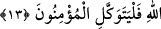

ELÇİMİZE DÜŞEN
APAÇIK BİR DUYURMADIR
11. Allah’ın izni olmaksızın hiçbir musibet isabet etmez. Kim Allah’a inanırsa,
Allah onun kalbini doğruya götürür. Allah her şeyi bilendir.
12. Allah’a itâat edin, Peygamber’e de itâat edin. Yüz çevirirseniz bilin ki,
elçimize düşen apaçık bir duyurmadır.
13. Allah; O’ndan başka hiçbir ilâh yoktur. Müminler yalnız Allah’a dayanıp
güvensinler.
“Allah’ın izni olmaksızın” beden, çocuk, mal ve hiç bir yaratığa, “hiç bir musibet
isabet etmez” âyetinde yer alan “mâ” kelimesi olumsuzluk, devamında gelen ‘min’ de
te’kid ifâde eder. Buna göre âyetin mânâsı şöyle olur: Allah’ın izni, takdir ve irâdesi
olmaksızın hiçbir kulun başına hiçbir şekilde musibet gelmez.
Sanki musibet bizatihi insana yönelmiştir, ama ona isabet etmesi Allah’ın iznine
bağlanmıştır. Bu âyet-i kerimede tesbit edilen bu gerçek “Başınıza gelen herhangi bir
musibet, kendi ellerinizle işledikleriniz yüzündendir. (Bununla birlikte) Allah
çoğunu affeder” (eş-Şûrâ, 42/30) âyeti ile çelişmez. Bu âyetin mânâsı, başınıza gelen
herhangi bir musibet kendi ellerinizle işlediğiniz mâsiyetleriniz yüzündendir. Yüce
Allah bunların çoğunu affeder, kulu cezâlandırmaz. Şûrâ suresindeki âyette böyle
buyurulmasının sebebleri vardır:
1- Bu âyette yer alan tesbit günahkârlar hakkındadır. Çünkü nice musibetler vardır ki,
insanın başına başka bir sebeble, mesela sabrederse fazla ecir verilmesi, ecir
kazanması dolayısı ile günahlarının bağışlanması vb. sebeblerle gelir. İşte mü’minin
başına gelen musîbet bu kabildendir.
2- Kötülük edene gelen musibet yaptığı kötülük sebebi iledir. Bu musibet ancak
Allah’ın izni ve irâdesi ile olur. Nitekim Allah şöyle buyurur: “Hepsi Allah’tandır
de.” (en-Nisa, 4/78) Yâni o musibeti var etmek ve kula ulaştırmak açısından hepsi
Allah’tandır. Kendi mülkünde ancak kendi dilediği cereyan eden Allah’ı tesbih ederiz.
Kâfirler, “eğer müslümanlar hak yolda olsalardı Allah onları dünyada iken mal ve
bedenlerine gelen musibetlerden kendilerini korurdu” demişlerdi. İşte bunun üzerine